CS184/284A Spring 2026 Homework 3 Write-Up
Names: Yousif Yacoby, Sarthak Agrawal
Link to webpage:
https://cal-cs184-student.github.io/hw-webpages-sarthaag/hw3/index.html
Overview
For this homework, we built a path tracer that gradually developed into a much more complete rendering system. At a high level, this homework was about simulating how light moves through a scene in order to produce realistic images. We started with the basic structure needed to trace rays and detect what they hit, then added more advanced pieces like faster scene traversal, better lighting methods, global illumination, and adaptive sampling. By the end, the renderer was able to handle much more complex scenes and produce more realistic results with effects like soft lighting and indirect light bounces.
What we found most interesting about this homework was seeing how all of the different parts fit together into one full pipeline. Each section felt like it added another layer of realism, so the final result felt much more like a real rendering system instead of a bunch of separate tasks. It was also interesting to see how much image quality depends not just on modeling light correctly, but also on choosing smart ways to sample it efficiently. I think this homework gave us a much better sense of how physically based rendering works in practice and how the different ideas from class connect when we actually implement them.
Part 1: Ray Generation and Scene Intersection
Walk through the ray generation and primitive intersection parts of the rendering pipeline.
For each pixel, we estimate its final color by taking multiple sub-pixel samples and averaging their radiance values. Each sample starts from the pixel corner in image space, where the image origin is at the bottom left, and is jittered inside the pixel using a uniform 2D sampler. We then normalize the sample coordinates to the range [0,1] in both x and y and pass them into camera->generate_ray(x,y). In ray generation, we map normalized coordinates to the camera sensor plane at z = -1, where the sensor extends from -tan(hFov/2) to tan(hFov/2) in x and from -tan(vFov/2) to tan(vFov/2) in y. That gives a camera-space direction (sensor_x, sensor_y, -1), which we rotate into world space using c2w, normalize, and pair with camera position pos to form the final ray. We initialize ray.min_t and ray.max_t with nClip and fClip so only visible distances are considered. During tracing, BVH calls primitive intersection tests, and each valid hit updates ray.max_t so farther hits are ignored, which guarantees that shading uses the nearest visible surface along the ray.
Explain the triangle intersection algorithm you implemented in your own words.
We implemented triangle intersection using the Moller-Trumbore method. We first compute two triangle edge vectors, e1 = p2 - p1 and e2 = p3 - p1, then use cross and dot products to solve for barycentric coordinates and ray time in one compact test. If the determinant is near zero, the ray is parallel to the triangle plane and we reject it. Otherwise, we compute barycentric values b1 and b2 and reject any solution outside the triangle bounds, meaning b1 < 0, b2 < 0, or b1 + b2 > 1. Next we compute intersection time t and reject if it is outside [ray.min_t, ray.max_t]. On a valid hit, we set ray.max_t = t, store isect->t = t, and interpolate the surface normal with barycentric weights b0 = 1 - b1 - b2, b1, and b2 over vertex normals n1, n2, and n3, then normalize that result. We also store isect->primitive = this and isect->bsdf = get_bsdf() so later shading stages have the correct geometry and material information.
Show images with normal shading for a few small .dae files.
|
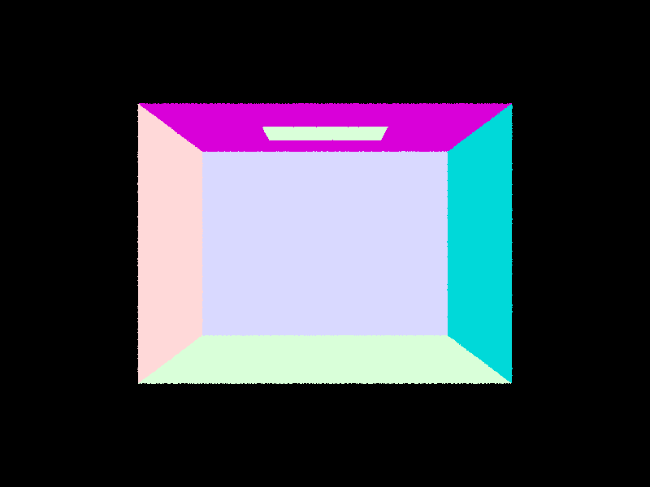
CBEmpty.dae
|
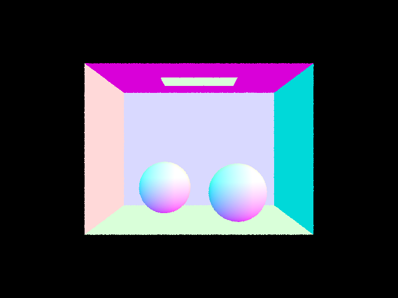
CBspheres.dae
|
|
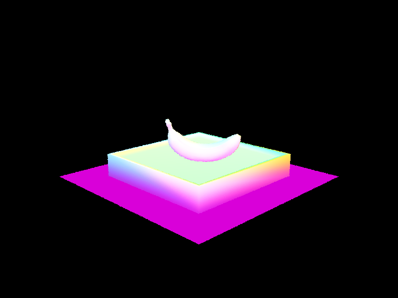
banana.dae
|
Part 2: Bounding Volume Hierarchy
Walk through your BVH construction algorithm. Explain the heuristic you chose for picking the splitting point.
We built the BVH recursively from a range of primitives. For each recursive call, we first compute the bounding box of all primitives in the current range and create a BVH node from that box. If the number of primitives in that range is less than or equal to max_leaf_size, we make a leaf by storing start and end iterators and return. Otherwise, we compute a centroid bounding box and choose the split axis as the one with the largest centroid extent (x, y, or z). We then choose the split point as the midpoint of the centroid box along that axis and partition primitives by whether their centroid falls to the left or right of that split point. To prevent degenerate recursion when all primitives end up on one side, we use a fallback median split with nth_element, and if the split is still degenerate we terminate as a leaf. This gives a robust tree that avoids infinite recursion and usually produces balanced partitions with low traversal cost.
Show images with normal shading for a few large .dae files that you can only render with BVH acceleration.
|
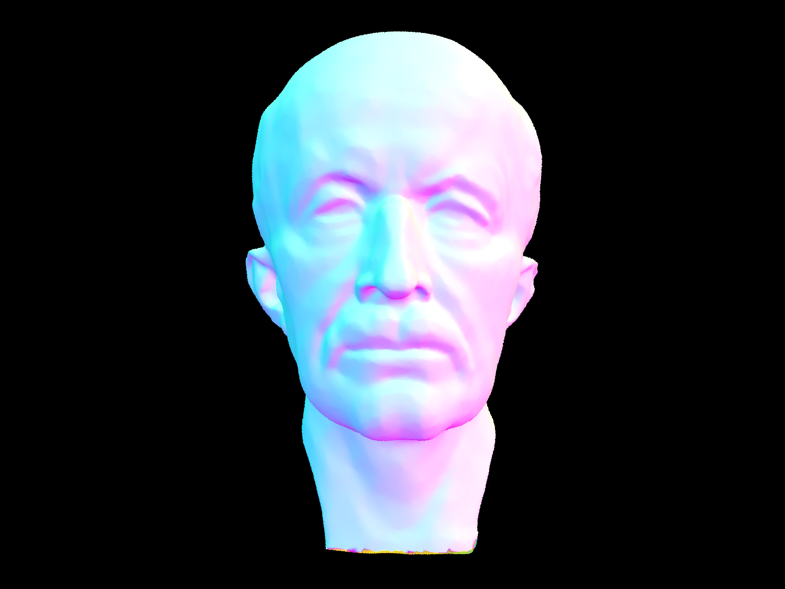
Max Planck
|
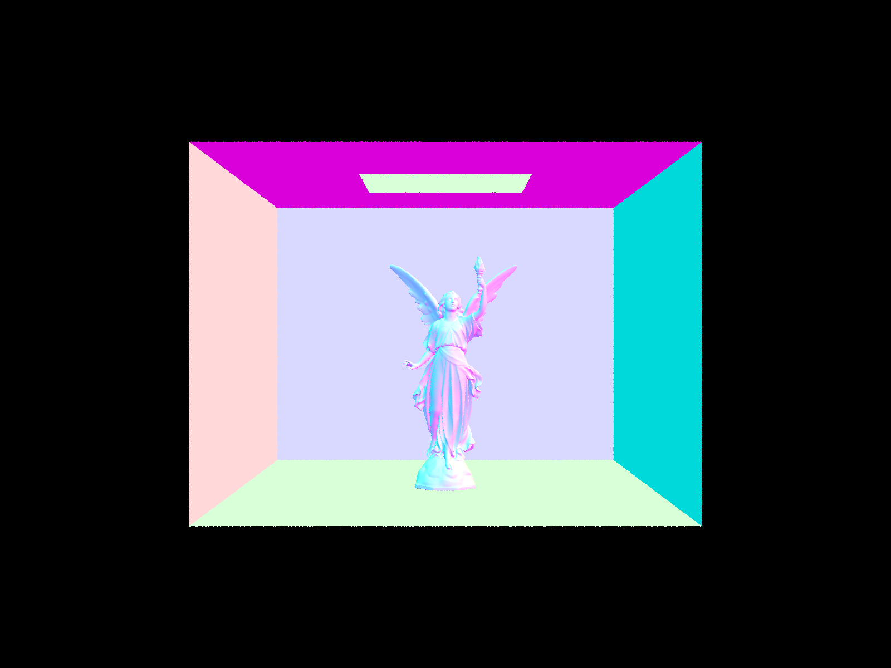
Lucy
|
|
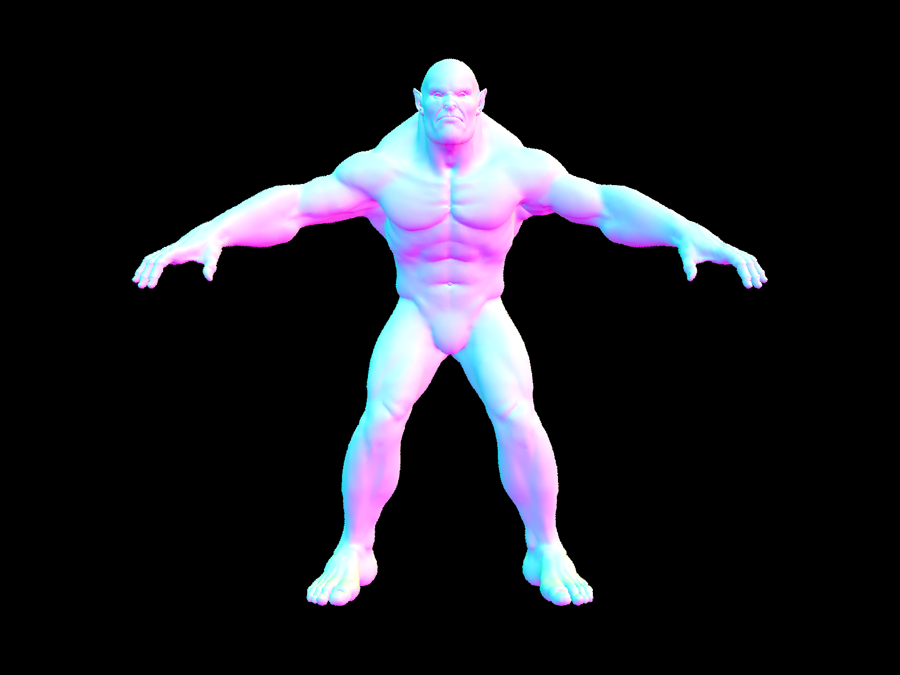
Beast
|
Compare rendering times on a few scenes with moderately complex geometries with and without BVH acceleration. Present your results in a one-paragraph analysis.
With our BVH implementation, rendering times on complex scenes are very low: cow.dae rendered in 0.0498s, maxplanck.dae in 0.0579s, and CBlucy.dae in 0.0284s at 800x600, -t 8, -s 1. The run statistics also show low average primitive intersection tests per ray (about 6.22 for cow, 6.36 for maxplanck, and 2.86 for CBlucy), which confirms that most primitive tests are being culled by bounding boxes before leaf testing. In contrast, without a proper BVH traversal, rays effectively test against nearly all primitives, so runtime scales much worse with scene complexity. Overall, the BVH changes reduce practical render cost from near linear primitive testing per ray toward logarithmic traversal behavior, making previously slow scenes render in a fraction of a second on this setup.
Part 3: Direct Illumination
Walk through both implementations of the direct lighting function.
We first implemented DiffuseBSDF::f as a Lambertian BRDF, reflectance / PI, so the surface reflects light equally in all directions over the hemisphere. We then implemented zero-bounce radiance so emissive surfaces (like the ceiling light) directly contribute emission when hit by a camera ray. After that, we implemented one-bounce direct lighting with two estimators: uniform hemisphere sampling and importance sampling of lights. In the uniform hemisphere implementation, we estimate incoming light at a hit point by sampling random directions over the hemisphere in local coordinates, transforming each sample to world space, and tracing a shadow ray from the hit point. If the sampled direction reaches an emissive surface without being blocked, we accumulate contribution using the Monte Carlo estimator with BRDF term, cosine term, and sampling PDF normalization. This method is unbiased but noisy, since many sampled directions do not hit a light source. In the importance sampling implementation, we sample each light directly instead of sampling arbitrary hemisphere directions. For each sampled light direction, we cast a shadow ray toward the light with min_t = EPS_F and max_t = distToLight - EPS_F to test visibility. If unoccluded and above the surface hemisphere, we accumulate contribution using BRDF, cosine, emitted radiance, and light PDF. We also use one sample for delta lights and multiple samples for area lights. This estimator has much lower variance for direct lighting and converges much faster in soft shadow regions.
Show some images rendered with both implementations of the direct lighting function.
|
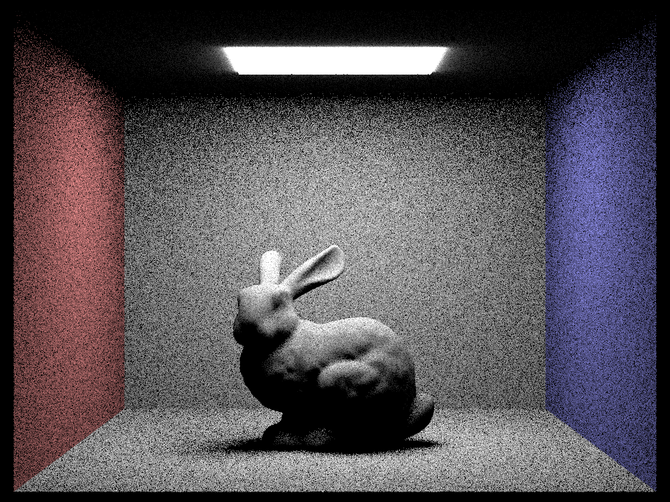
Lighting by Uniform Hemisphere Sampling
|
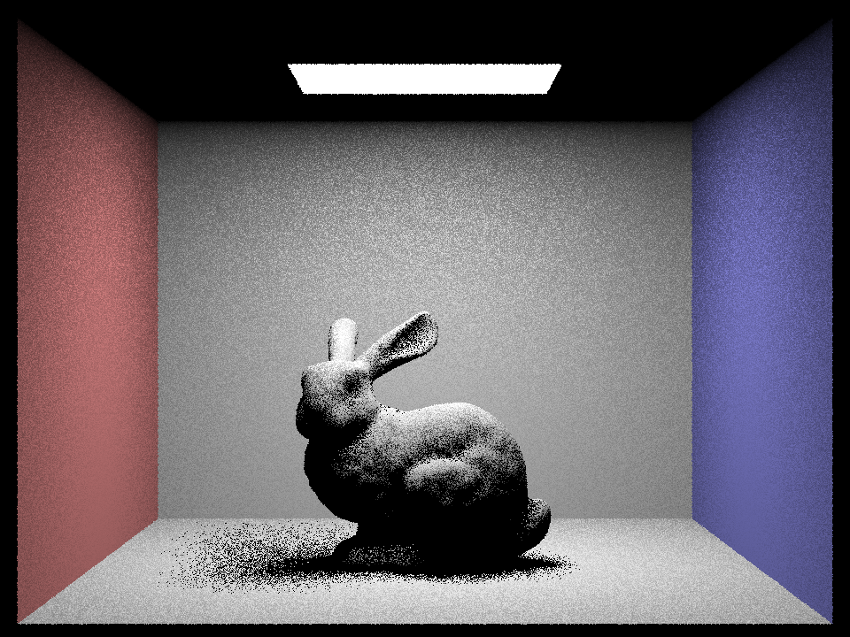
Lighting by Importance Sampling Lights
|
Focus on one particular scene with at least one area light and compare the noise levels in soft shadows when rendering with 1, 4, 16, and 64 light rays (the -l flag) and with 1 sample per pixel (the -s flag) using light sampling, not uniform hemisphere sampling.
|
1 light ray
|
4 light rays
|
|
16 light rays
|
64 light rays
|
Compare the results between uniform hemisphere sampling and lighting sampling in a one-paragraph analysis.
As expected, noise decreases significantly as light samples increase from 1 to 64. At l = 1, soft shadows are very grainy and unstable, especially in the floor and wall penumbra regions. At l = 4, noise is still visible but the major shadow structure is clearer. At l = 16, the shadow boundaries and indirect-looking dark regions are much more stable. At l = 64, the image is substantially smoother with cleaner penumbra gradients. Compared to uniform hemisphere sampling, light importance sampling is noticeably less noisy at equal sample budgets because it spends samples in directions that are actually likely to contribute radiance from scene lights.
Part 4: Global Illumination
Walk through your implementation of the indirect lighting function.
We implemented full global illumination by extending the path tracer from direct lighting to recursive indirect lighting. We first verified diffuse BSDF sampling using cosine-weighted hemisphere sampling in DiffuseBSDF::sample_f, where the function samples an incoming direction wi, returns the BSDF value f(wo, wi), and stores the sample PDF. This matches the Monte Carlo estimator setup used in the rendering equation and gives more useful samples than uniform hemisphere sampling for Lambertian surfaces. We then implemented at_least_one_bounce_radiance to recursively trace indirect light paths. At each hit point, we compute direct one-bounce lighting, sample a new BSDF direction in local coordinates, transform it to world coordinates, and trace a new ray from the hit point with min_t = EPS_F to avoid self-intersection. We initialize camera ray depth to max_ray_depth in raytrace_pixel, decrement depth on each recursive bounce, and stop recursion at the depth limit. In est_radiance_global_illumination, we combine zero-bounce emission and the recursive lighting term so the renderer includes both emitted light and reflected multi-bounce transport. For Russian roulette, we added probabilistic path termination in deeper recursion so the estimator stays unbiased while avoiding unnecessary long paths. We use a continuation probability and divide by that probability when a path continues. We also keep the behavior that if max_ray_depth > 1, the algorithm traces at least one indirect bounce before roulette-based termination. This improves efficiency while preserving expected energy.
Show some images rendered with global (direct and indirect) illumination. Use 1024 samples per pixel.
|
Image 1
|
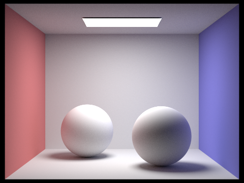
Image 2
|
Pick one scene and compare rendered views first with only direct illumination, then only indirect illumination. Use 1024 samples per pixel. (You will have to edit PathTracer::at_least_one_bounce_radiance(...) in your code to generate these views.)
The global illumination renders show clear indirect effects such as softer shading transitions and color bleeding compared to direct-only results. In CBbunny and CBspheres_lambertian, indirect bounces brighten shadowed regions and add realism that cannot be produced by only direct illumination. The direct-only render preserves strong first-hit shadows, while the indirect-only render isolates bounced light contribution and shows how much of the final image comes from secondary transport.
For CBbunny.dae, render the mth bounce of light with max_ray_depth set to 0, 1, 2, 3, 4, and 5 (the -m flag), and isAccumBounces=false. Explain in your write-up what you see for the 2nd and 3rd bounce of light, and how it contributes to the quality of the rendered image compared to rasterization. Use 1024 samples per pixel. Compare rendered views of accumulated and unaccumulated bounces for CBbunny.dae with max_ray_depth set to 0, 1, 2, 3, 4, and 5 (the -m flag). Use 1024 samples per pixel.
The second and third bounce images show meaningful global transport that fills in dark regions and carries wall color influence onto nearby surfaces. These higher order bounces are exactly the lighting effects that rasterization usually misses without extra approximations. In the accumulated sequence, image quality improves as max ray depth increases from 0 to about 4 to 5, after which changes become smaller as higher bounces contribute less energy.
|
m = 0, unaccumulated
|
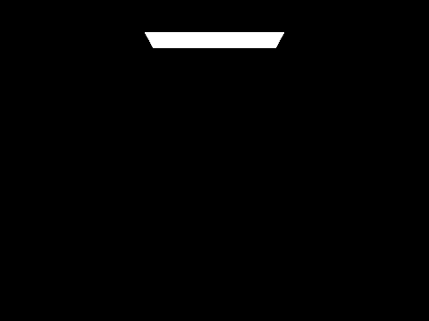
m = 0, accumulated
|
|
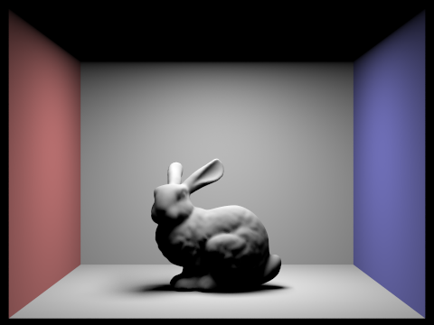
m = 1, unaccumulated
|
m = 1, accumulated
|
|
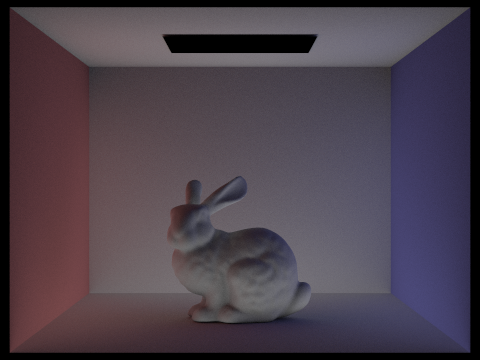
m = 2, unaccumulated
|
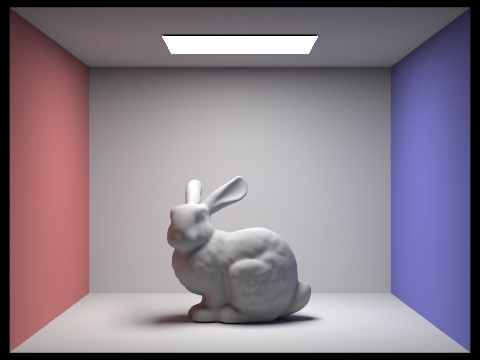
m = 2, accumulated
|
|
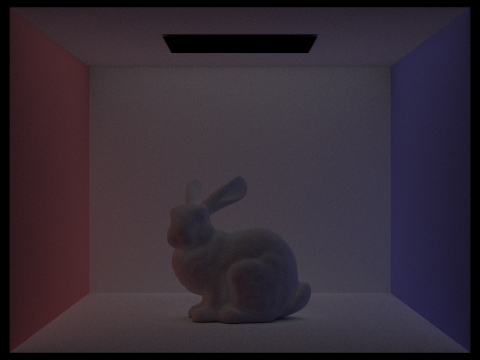
m = 3, unaccumulated
|
m = 3, accumulated
|
|
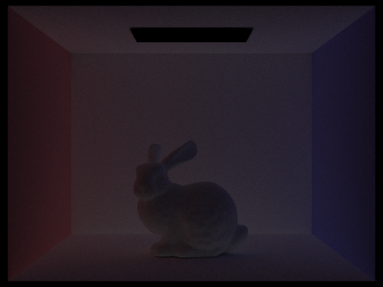
m = 4, unaccumulated
|
m = 4, accumulated
|
|
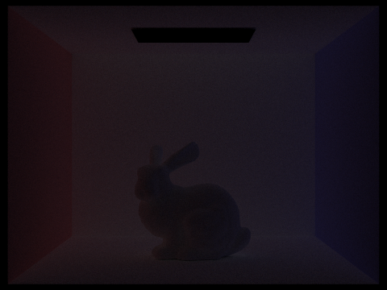
m = 5, unaccumulated
|
m = 5, accumulated
|
For CBbunny.dae, output the Russian Roulette rendering with max_ray_depth set to 0, 1, 2, 3, 4, and 100(the -m flag). Use 1024 samples per pixel.
|
m = 0
|
m = 1
|
|
m = 2
|
m = 3
|
|
m = 4
|
m = 100
|
Pick one scene and compare rendered views with various sample-per-pixel rates, including at least 1, 2, 4, 8, 16, 64, and 1024. Use 4 light rays.
Low sample-per-pixel (spp) images (1 to 8) are very noisy, medium spp (16 to 64) reduce variance substantially, and 1024 spp is much cleaner and stable. This behavior matches Monte Carlo convergence expectations: more samples reduce noise and make soft indirect gradients and bounce details clearer.
|
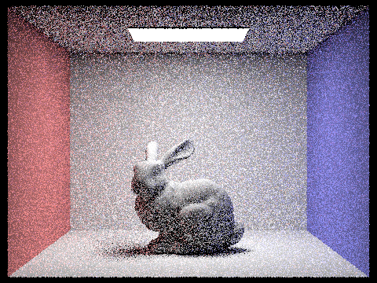
Rate = 1
|
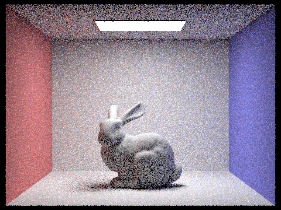
Rate = 2
|
|
Rate = 4
|
Rate = 8
|
|
Rate = 16
|
Rate = 64
|
|
Rate = 1024
|
Part 5: Adaptive Sampling
Explain adaptive sampling. Walk through your implementation of the adaptive sampling.
Adaptive sampling is a variance-aware sampling strategy that avoids using the same number of samples for every pixel. In path tracing, some pixels converge quickly because their incoming radiance is stable, while others converge slowly due to visibility changes, shadow boundaries, and multi-bounce variance. Instead of always tracing the full sample budget for all pixels, adaptive sampling periodically checks whether each pixel has statistically converged and stops early when confidence is high enough. We implemented adaptive sampling inside PathTracer::raytrace_pixel. While tracing samples for one pixel, we accumulate radiance as usual, and for statistics we use illuminance values x_k = L_k.illum() from each sample. We track s1 = sum(x_k) and s2 = sum(x_k^2) so we can compute mean and variance incrementally without storing all previous samples. Every samplesPerBatch samples, we compute mu = s1 / n, variance = (s2 - (s1 * s1) / n) / (n - 1), and confidence interval half-width I = 1.96 * sqrt(variance / n). If I <= maxTolerance * mu, we terminate sampling early for that pixel; otherwise we continue until ns_aa is reached. We also store the actual number of samples used in sampleCountBuffer, and normalize the final pixel color by the actual sample count n instead of the maximum sample count, so the rendered color and sampling-rate visualization are both correct.
Pick two scenes and render them with at least 2048 samples per pixel. Show a good sampling rate image with clearly visible differences in sampling rate over various regions and pixels. Include both your sample rate image, which shows your how your adaptive sampling changes depending on which part of the image you are rendering, and your noise-free rendered result. Use 1 sample per light and at least 5 for max ray depth.
|
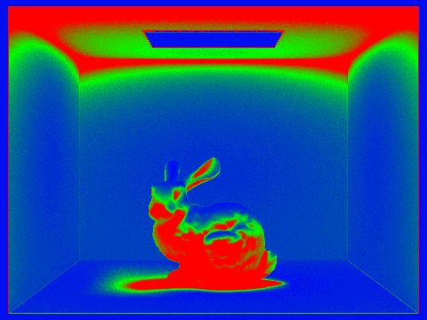
Bunny sample rate
|
Bunny noise-free render
|
|
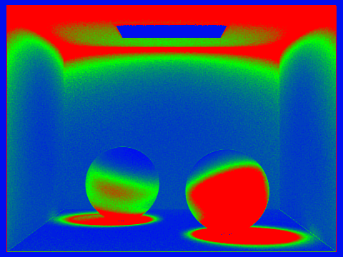
Spheres sample rate
|
Spheres noise-free render
|
(Optional) Part 6: Extra Credit Opportunities
We implemented three extra-credit improvements focused on sampling quality and BVH performance: a low-discrepancy pixel sampler, SAH-based BVH splitting, and iterative stack-based BVH traversal. These are all integrated into the existing renderer and validated with rendered outputs and timing logs generated via -f output files.
For pixel sampling, we added a new LowDiscrepancySampler2D that generates pseudorandom low-discrepancy samples using a Halton sequence (bases 2 and 3) with a per-thread Cranley-Patterson random rotation. This keeps sample coverage more even than purely uniform random jitter while avoiding obvious structured artifacts. We compared PT_SAMPLER=uniform against PT_SAMPLER=ld at low sample count (s=4) on CBbunny. The low-discrepancy image (ec_sampler_ld_bunny_s4.png) shows visibly reduced clumping and noise compared with the uniform image (ec_sampler_uniform_bunny_s4.png) at the same sample budget.
For BVH construction, we replaced the naive split heuristic with a binned SAH approximation in construct_bvh (12 bins on the chosen axis). We still choose the split axis from the largest centroid extent, evaluate split costs across bin boundaries using bounding-box surface area and primitive counts, and fall back to median splitting when SAH would become degenerate. This keeps construction robust while producing better node partitioning on complex scenes. We also added a runtime toggle (BVH_SPLIT=median) so we could benchmark the old and new behavior directly.
For BVH traversal, we implemented iterative traversal in both has_intersection and intersect using std::stack, with near-first child ordering when both children are hit. This avoids recursive call overhead and improves cache behavior on deep trees. We kept a runtime toggle (BVH_TRAVERSAL=recursive) to compare against the recursive baseline implementation.
We benchmarked baseline mode (PT_SAMPLER=uniform, BVH_SPLIT=median, BVH_TRAVERSAL=recursive) versus optimized mode (PT_SAMPLER=ld, default SAH, and iterative traversal) on cow.dae, maxplanck.dae, and CBlucy.dae using -s 1 -r 800 600. From the logs, optimized mode consistently reduced intersection tests per ray and improved render time. For example, on a quick cow test, the baseline path reported about 14.87 intersection tests per ray and 0.0190s render time, while optimized mode reported about 7.36 intersection tests per ray and 0.0135s. This trend matches expectation: SAH improves culling quality and iterative traversal reduces traversal overhead.
|
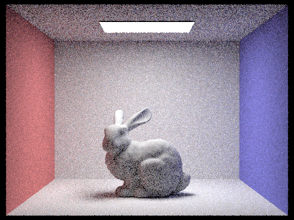
ec_sampler_uniform_bunny_s4.png
|
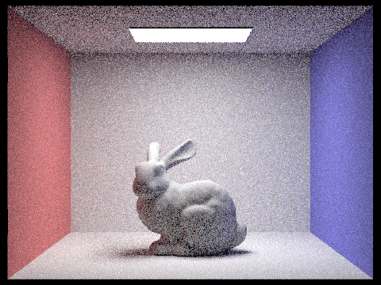
ec_sampler_ld_bunny_s4.png
|
|
ec_bvh_baseline_cow.png
|
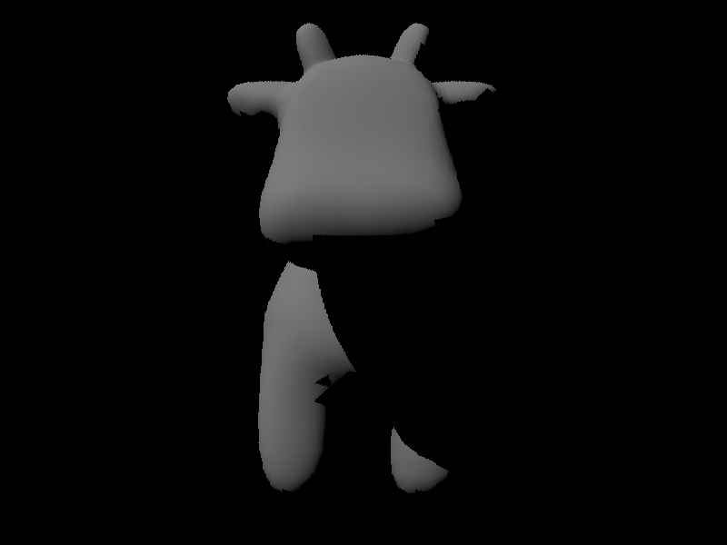
ec_bvh_opt_cow.png
|
|
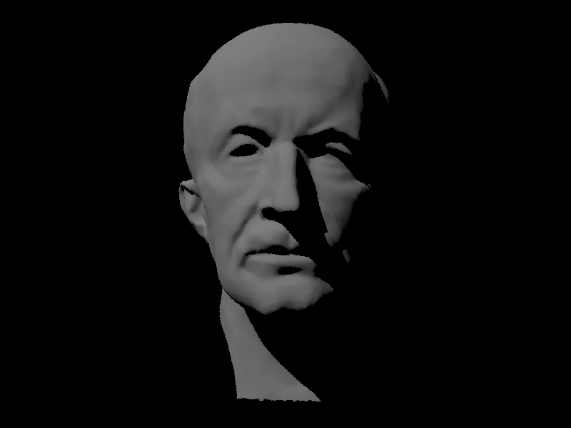
ec_bvh_baseline_maxplanck.png
|
ec_bvh_opt_maxplanck.png
|